1.1. Веб-сервер установка, настройки
Для работы с языком программирования PHP необходимо рассмотреть такое понятие веб-сервер для чего он нужен и как его настраивать. Также рассмотрим различные редакторы кода, узнаем о синтаксис PHP и освоим его базу. Модуль разделен на три темы и в первой теме мы узнаем что такое веб сервер. Рассмотрим готовое решение. Какие компоненты в них входят. Научимся его настраивать.
Если вы ничего не слышали о таких словах как Nginx, PHP, APACHE то ничего страшного эти понятия будут рассмотрены в данном модуле. Для начала нужно дать определение понятию веб-сервер.
Веб сервер - это программа, которая принимает HTTP запросы от клиента и отдает им HTTP ответы. Другими словами допустим вы открываете какую-либо страницу браузера и в это время ваш браузер, клиент, формирует HTTP запрос. Веб-сервер его успешно принимает и на основе параметров HTTP запроса решает какой ответ дать клиенту т.е. странице браузера. Здесь нужно заметить, что сервера могут называть как саму программу, так и компьютер на котором эта программа установлена. То есть получается, чтобы начать разрабатывать веб приложения необходимо сначала установить и настроить веб сервер. Изначально установка и настройка веб сервера намного проще, чем может показаться на первый взгляд. Но компонентов очень много и мы выберем лучший набор. Для начала работы мы не будем использовать веб-сервер с уникальными возможностями для обучения нам хватит и стандартных настроек. Для быстрой и простой установки веб сервера можно использовать готовые решения созданные грамотными специалистами. С помощью этих решении мы можем вывести страницу в браузер буквально за пару минут. Существует множество готовых веб серверов. Среди них Denwer, Open Server Panel, Win Jiams, Xampp. Их готовность заключается в том, что в них содержатся предустановленные и настроенные компоненты самого веб сервера базы данных и других необходимых программных продуктов для работы компонентов. И здесь нужно понимать, чем они все отличаются. По факту это все одно и то же и каждый из них это Веб сервер. Отличается они лишь предоставляемых ими возможностями для разработчика. Мы же в этой теме будем настраиваться Open Server Panel, потому что он:
Начав разработку сайта на одном компьютере вы сможете продолжить работу на другом компьютере.
Скачать и установить Open Server Panel.
Для этого заходим на официальный сайт OSPANEL.IO переходим на вкладку «скачать» и скачиваем минимальную базовую версию, поскольку для обучения ее будет достаточно. Данный веб сервер распространяются совершенно бесплатно, однако если хотите, можете поддержать проект небольшой суммой денег. После завершения скачивания файлов на локальный компьютер, можно непосредственно переходить к установке программного обеспечения. Запускаем Open_server_basic, выходит диалоговое окно в котором предлагается распаковать все файлы в корень диска С:\. Желательно установить в корень диска С:\, чтобы знать точное стандартное местоположение файлов. Однако у вас есть выбор для утановки данного веб сервера в любое другое место вашего компьютера. После завершения процесса разархивирования переходим в локальный диск C:\OpenServer, запускаем Openserver.exe.
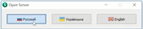
1. Выбираем русский язык.
2. Если у вас на компьютер не установлен Microsoft visual c++ то установите его
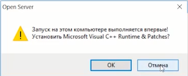
3. Дальше заходим в область уведомлений (англ. notification area) или системный трей и ищем красный флажок.
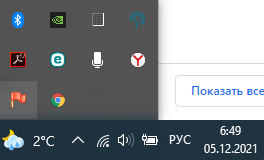
4. Нажимаем по нему правой кнопкой мыши - запустить.
Веб сервер запущен. Мы можем перейти в браузер. В адресной строке набрать localhost и видим приветственную страницу Open Server Panel. Фактически это готовая веб страница, которую вы можете разместить в интернете, т.е. готовый веб сайт. Однако на данный момент на нем нет информаций.
На данном этапе у вас может возникнуть вопрос «неужели работает все так просто?». На самом деле не достаточно пару раз нажать клавиши мышки. Давайте рассмотрим что находится под внутри у OSpanel. Во-первых это веб сервер среди множества веб серверов самыми популярными являются nginx и apach к счастью в OSPanel есть и тот и другой. Для хранения данных OSPanel предлагает несколько система управления базами данных (СУБД). Среди них MySQL, PostgreSQL, Oracle, MsSQL, MariaBD и другие. Самый популярный СУБД на сегодняшний день является MySQL. Его мы и будем использовать. Также в OSPanel есть PHP версии 5 и 7. И тут может возникнуть резонный вопрос «а зачем он вообще нужен и где ему здесь место?».
Давайте рассмотрим модели общения клиента с сервисом.
Клиент — Сервер — PHP — СУБД
То есть PHP это и есть жизнь на сайте, но нужно понимать, что PHP решает какие данные нужно отобразить. Для рисования их в браузере ему на помощь приходит HTML,CSS и JS. У нас есть два веб сервера Apache и Nginx. Но что же из них лучше. Мы рекомендуем использовать их в связки. Схема будет выглядеть следующим образом.
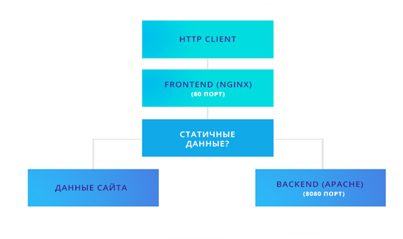
Запрос изначально попадает на Nginx. Если Nginx решает что ответ будет статичными, а к этим данным относятся картинки файла, CSS и JS, то обрабатывает его. А если контент будет динамичным, это как раз тот контент, который генерируется PHP, то передает управление на Apache которая как раз займется этой генерации. Поскольку мы разобрались что то как работают давайте наконец настроим OS Panel для этого переходим к Tray нажимает правой клавиши и мышки по флажком настройки. Здесь нам нужна вкладка «модули». В нашим обучением мы будем использовать последний стабильной версии модулей для HTTP выбираем связку Apache/PHP 7/Nginx . В качестве версии PHP выбираем последнюю доступную в моем случае это 7.1. В качестве СУБД выбираем 5.7 нажимаю сохранить.
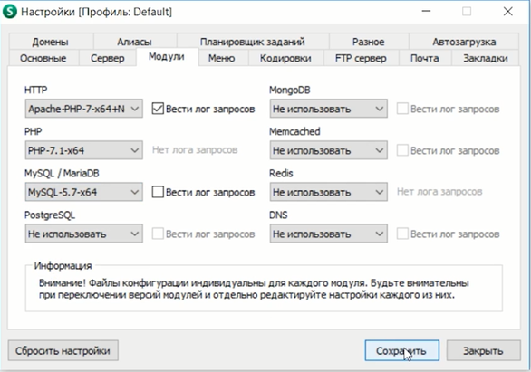
Соглашаемся на перезапуск веб сервер и все. Поздравляю. Мы только что настроили наш веб сервер.
Мы узнали что такое веб сервер из каких компонентов он состоит и как он работает с PHP.
1.2. Синтаксис PHP и редакторы кода
На этом уроке мы поговорим о php, о типах данных, о переменах. Как правильно именовать переменные и как правильно оставлять комментарии. Но перед тем как перейти к изучению php нам нужно решить в чем мы будем работать. Давайте рассмотрим основные редакторы кода.
Первый это блокнот, который очень тяжело назвать редактором кода, он вообще не предназначен для программирования.
Второй это NotePad++ бесплатный редактор, который поддерживает подсветку синтаксиса и имеет широкий набор плагинов. Из минусов работает только на OS Windows.
Третий довольно популярный редактор кода это SublimeText условно бесплатный редактор имеет более широкий набор плагинов чем NotePad++ работает на OS Windows ,MAC OS и Linux.
Четвертое это PhpStorm. Наверное самый лучший инструмент для разработки больших приложений на php имеет большое количество встроенного функционала, начиная от возможности работать с консолью и заканчивая управлением системами контроля версий и базами данных. Из минусов – существуют только платные версии. Есть версии на OS Windows , MAC OS и Linux.
В дальнейших примерах и уроках мы будем использовать SublimeText. Почему необходимо выбрать именно данный редактор:
Во первых вам не придется покупать PhpStorm для обучения.
Во вторых нам не потребуется тот функционал который предлагает PhpStorm
В третьих интерфейс не будет заполнен лишними данными которые вам сейчас не нужны и вы сможете полностью сконцентрироваться на изучении языка.
Начнем изучение языка php с того как он работает. Вообще есть два типа языков компилируемые и интерпретируемые. Компилируемые нужно сначала скомпилировать, исходный код переводится компилятором в машины код, а затем записывается в исполняемый файл, например в Windows такой файл имеет расширение .exe. Исходный код интерпретированных языков программирования не переводится в машинный код, а сразу исполняется специальной программой интерпретатором т.е. программа написана на интерпретированном языке программирования это всего лишь набор действий и функций которые должен выполнять интерпретатор. Такую программу можно запустить на любой операционной системе. Достаточно лишь иметь установленный интерпретатор. PHP как раз является интерпретируемым языком программирования, что позволяет запускать веб сервера в связке с php на любой операционной системе.
Наконец переходим к изучению синтаксиса языка php. Создадим php файл заходим в локальный диск C:\OpenServer\domains\localhost в этой папке веб сервер ищет файлы с которыми он должен работать. Сейчас на примере все станет понятно. Создаем файл «текстовый документ» и переименуем его в «helloworld.php» расширением файла должна быть .php чтобы интерпретатор знал, что он работает c php файлами. Открываем файл с помощью редактора кода SublimeText. Синтаксис языка php называют C подобным т.е. он очень похож на него, но есть и отличия. Для начала нужно дать понять интерпретатору, что он имеет дело с php кодом. Для этого используется следующая конструкция <?php. Что это означает? Это означает, что интерпретатор увидев такую конструкцию будет считать, что дальше идет php код и будет его соответственно интерпретировать и выполнять. Чтобы дать понять интерпретатору что код закончился нужно закрыть область кода php. Делать это следующим образом ?>.
Зачем же нужны эти конструкции которые начинают область кода php и заканчивают ее. Это нужно для того что в файле может находиться не только php код но также HTML, JS, CSS. Также если мы знаем, что в нашем файле мы будет использовать только php код, то закрывать область php кода не обязательно, то есть от этой конструкции можно избавиться.
Напишем нашу первую программу на php. Как мы уже договорились это будет программа hello world. Попробуем вывести текст на экран. Для того чтобы вывести текст на экран у php есть специальная функция называется echo. Прописываем следующий код echo “Hello, World”;. Для того, чтобы браузер правильно прочитал наш код необходимо сохранить наш файл.
Объяснение кода. Конструкция echo пытается вывести на экран строку в нашем случае это строка hello world. Каждое действие в php должно заканчиваться точкой запятой, чтобы интерпретатор знал, что дальше будет следующее действие.
Проверим, что будет, если мы выполним этот файл. Для этого переходим в браузер и пишем в адресной строке localhost/helloworld.php. Мы видим что у нас в браузере появилась строка hello world. Как же это работает. По умолчанию настройки сервиса установлены так, что доменное имя localhost в адресной строке соответствует названию папки в директории C:\OpenServer\domains. А название файла исполняемого его соответствует названию файла внутри этой папки т.е. helloworld.php. Поздравляю вы только что написали свою первую программу на php.
Давайте двигаться дальше. Переходим к переменам. Создаем новый файл папке localhost. Называем его variables.php. Запускаем в SublimeText прописываем код <?php, чтобы программа поняла, что мы работаем с php кодом. Все перемены в php начинаются с символа $. Это позволяет интерпретатору понять, что он имеет дело с переменой названия переменной указывается после символа $. Но у вас может возникнуть вопрос, что же такое вообще переменная. Легче всего это представить в виде некой коробочки, у которой есть название и что-то лежит внутри. Имя переменной - это название данной коробочки, а значение переменной это то, что лежит внутри. Приведем пример. Назовем нашу переменную $helloworld, справа от знака $ это название переменной с помощью которой мы можем к ней обратиться. Пишем = и строку «Hello, World». Закончили действия ; (точка запятая).
Что здесь происходит. В коробочку под названием $helloworld мы кладем какое-то значение в данном случае в строку «Hello, World». Как вы уже могли догадаться это значение можно легко вывести на экран уже знакомым нам способом. Пишем echo, но уже вместо конкретной строки мы указываем переменную в данном случае $helloworld.
У вас должен получится следующий код:
<?php
$helloworld = «Hello, World»;
echo $helloworld;
Сохраняем и проверяем полученный результат в браузере. Пишем localhost/variables.php. В браузере должна появиться следующая строка: Hello, World.
Что же будет если мы поменяем значение в этой переменной в текстовом редакторе, например, напишем «Bay, World»? Значение поменяется и после сохранения в браузере отобразиться строка Bay, World. В этом и проявляется основной смысл переменных. Переменная означает изменяющиеся значения. В переменную можно положить в любой момент любое значение, но переменные могут быть не только строками как в нашем случае.
Какие типы бывают у переменных? Типы переменных делятся на две группы скалярные и смешанные. Мы приступим к изучению скалярных типов данных.
Для того чтобы код, который вы пишите, был понятен всем остальным программистам, необходимо оставлять комментарии. Комментарии бывают двух типов однострочные и многострочные. Далее мы рассмотрим, как они пишутся. Однострочный комментарий определяется написанием двумя знаками слэш- //. После данных знаков мы пишем текст, который поясняет код, например в если рассматривать конкретный пример, то он будет выглядеть следующим образом в текстовом редакторе:
//Определили переменную с названием hello world
$helloworld = «Hello, World»;
Многосторонние комментарии определяются написанием конструкции слэш + звездочка - /*. После написания редактор нам уже подсказывает то, что все, что находится после этой конструкции считается комментарием. Определяем по цвету кода в программе, он будет окрашены в серый цвет. Чтобы закончить область многострочного комментария пишем конструкцию звездочка слэш - */ .Все что находится между двумя этими конструкциями будет считаться за комментарии. Сюда можно написать абсолютно любой текст, который будет полностью проигнорирован интерпретатором. Многострочный комментарии будет выглядеть следующим образом в текстовом редакторе:
/* Определили переменную
с названием hello world
и значением “Bay, World” */
$helloworld = «Bay, World»;
Переходим к типам данных. Первый тип скалярный данных, который мы рассмотрим, это логический тип данных Boolean, который может принимать значения истина либо ложь. Перед основным кодом оставим комментарии « определим перемены типа Boolean». Создадим новую переменную $isWinner. Допустим нам нужно определить является ли какой-либо пользователь победителем для этого присваиваем к нашей переменной значение true. Что мы здесь сделали? Мы присвоили логический тип данных в переменную $isWinner. Второе возможное значение Boolean типа это false. Напишем следующий код, который определяет переменную $isAuthorized и присваиваем к нашей переменной значение false. И дальше мы можем проверять авторизованы ли пользователь является ли он победителем. Программный код:
$isWinner = true;
$isAuthorized = false;
Далее мы сразу разберемся как проверить какого типа является наша переменная. Для этого в языке php есть специальная функция для отладки называется она var_damp. И аргументом она принимает какое-либо значение переменную либо скалярный тип. В данном случае мы проверим какого типа переменная $isWinner. Наш код var_damp($isWinner);.
Для того, чтобы проверить правильно ли мы прописали код, необходимо сохранить текущий код и открыть его в браузере. Должна появиться строка bool(true); и это означает, что это переменная типа bool и значению у нее true.
Переходим к следующему типу данных целые числа. Целые числа в php определяются следующим образом. Прописываем переменную $numberTen и присвоим ей значение 10, что будет означать то что там хранится число 10. Также не забывайте оставлять комментарий, например то, что мы определили целые числа. Давайте определим еще одно целое число и назовем его $minusTen, запишем туда значение -10. Давайте попробуем вывести их на экран с помощью знакомых нам функции var_damp($numberTen) и var_damp($minusTen) сохраняем файл. Заходим в браузер и обновляет страничку видим, что у нас две переменные, оба типа integer целое число. Первое со значением 10, а вторая со значением -10. Целое число можно определить в различных системах исчисления. Например, назовем переменную $decimalInt и положим в нее частичное число, так как мы это делали раньше, например, 150 это у нас будет десятичное число. Также можно записать целое число как 8-ая система счисления. Следующим шагом мы создаем еще одну переменную $octimalInt, а в его значении пишем 0 и затем 8-ое число. Например 123, желательно оставить комментарии, что это 8-ое число. Также можно записать число в 16-ой системе счисления, создаем переменную $hexadecimalInt. Определяется они следующим образом, напишем 0x и далее число в 16-ой системе счисления, например аf3. И отметим в комментарии, что это 16-ое число.
Чтобы узнать как программа будет выводить нам числа и что будет если мы выведем на экран число записанное не в 10 ричной системе счисления. Пропишем код уже ранее изученный нами var_damp($decimalInt), var_damp($octimalInt) и var_damp($hexadecimalInt). И сохраняем свой код. У вас должен получиться следующий код:
<?php
// определяем целое число
$numberTen = 10;
$minusTen = -10;
var_damp($numberTen);
var_damp($minusTen);
$decimalInt = 150; // десятичное число
$octimalInt = 0123; //восьмеричное число
$hexadecimalInt = 0xAF3; // шестнадцатеричное число
var_damp($decimalInt);
var_damp($octimalInt);
var_damp($hexadecimalInt);
Заходим в браузер обновляем страницу и видим, что у нас переменная $hexadecimalInt со значением 1803. Дело в том, что даже если мы определили переменую в другой системе вычисления при выводе она все равно будет преобразована в 10-ую систему счисления.
Следующий тип переменых это Double или float - числа с плавающий точкой это не целое число. То есть дробные. Рассмотрим, как они определяются. Определим наше первое число типа Double. Давайте посмотрим что будет если мы выведем ее на экран. Создаем переменную $myFirstDoubleVariable= 1.5; и обновляем страницу на выходе видим что число типа float это число с плавающей точкой и значение его 1,5. Число с плавающей точкой можно определить несколькими способами. Первый уже нам знаком простой способ например 10,34 . Отметим что это простой способ. Также можно определить число с плавающие точкой как некоторое число умножить на 10 в какой то степени назовем переменной power и определим что это 3,4 умноженная на 10 в четвертой степени и запишем следующим образом 3.4е4. Еще один способ это тоже 10 умноженная на 10 в какой то степени назовем переменную anotherPower и скажем что это - 1.34e-10. И оставим в этом комментарии. Теперь попробуем вывести эти числа на экран. Перед сохранением у вас должен получиться следующий код:
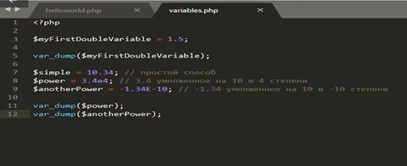
Сохраняем. Открываем браузер. И видим, что второе число float со значением 34 000. И второе это -1,34E-10 из-за того, что это число слишком маленькое, оно было укомплектована в такой более компактной форму, чтобы не выводить много нулей.
Переходим к 4-му скалярному типу данных строки. Строки уже нам знакомо из первого примера, их можно определить двумя способами в одинарных кавычках и в двойных. Определим перемену $someString и положим в нее значение “I am a string”. И создадим еще одну строку и положим ее значение ‘I am a string too’. Но здесь мы поставим одинарные кавычки. В чем разница? Разница в том, что в строке с двойными кавычками php-интерпретатор будет искать какой то подвох. Например, символы и экранирования или другие php переменные. Приведем пример, определим несколько переменных уже знакомых нам типов $intVariable=10 и $doubleVariable=1.5. Если я в строку определенную двойными очками запишу переменную $intVariable, она будет интерпретирована и в итоговой строке будет написано «I am a string: 10». Если я то же самое сделаю в строке, которые определенны одинарными кавычками, то строка будет выведена как «I am a string too: $intVariable». Давайте это проверим.
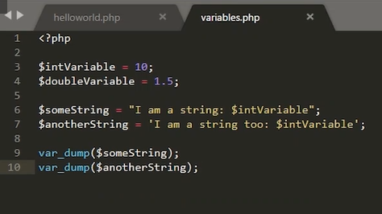
Обновляет страницу и видим, что в первом случае в строке определенный двойными кавычками, вместо переменой подставила значение 10. Во втором случае появилось просто название переменной. Это все из-за того, что интерпретатор проигнорировал и не стал интерпретировать переменную и ее значения.
Создадим новый файл и назовем его overriding_types.php. Откроем его в SublimeText, определим область кода <?php и напишем следующий код. Допустим, я определяю перемену типа $integerVariable=100. Выведем значение на экран, затем в эту же переменную положим строку «I am a string now». Выводим ее на экран. Как вы думаете, что будет выведено на экране? Большинство языков программирования со строгой типизацией выдали бы ошибку при попытке изменить тип переменной, но в php такого нет. В php слабая типизация и тип переменных можно менять в любой момент. Давайте это проверим.
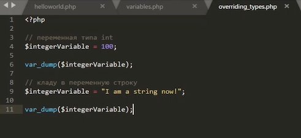
Открываем overriding_types.php и видим, что в первом случае у нас переменная типа integer со значением 100. Во втором случае строка длиной 18 и значением «I am a string now» . Нужно иметь в виду, что подобные переопределения типов может привести к определенным проблемам в будущем.
Еще одна деталь, которую вы могли заметить, то как мы именуем переменные. Это невероятно важная часть в работе программиста, и это самое главное правило хорошего тона программирования, нужно правильно именовать переменную. Согласитесь, если я переменную в которых хранится цена товара назову «а», то никто не поймет что хранится в этой переменной. И даже вы сами, т.е. человек, который написали этот код, через определенный промежуток времени забудете для чего эта перемена предназначалась. Вследствие этого существует правило именовать переменной согласно их значению и назначению, то есть для примеров я использовал следующие названия переменных integerVariable. Здесь важно было показать, что в переменной хранится именно число, а не строка и не булевый тип. Поэтому и назвал перемену integerVariable. И согласитесь если в переменной, которая называется integerVariable будет храниться строка, это приведет к определенному конфуза программиста и соответственно к определенным проблемы в коде. Не нужно называть переменной а,b,c,d и тд. Потому что ничего непонятно из их назначения и зачем данные переменные были созданы и какой тип данных в них хранится. Из этого правила есть исключения. Это перемены с названиями $i=0; $j=0; и $k=0; обычно переменные с такими названиями использовались для обозначения счетчиков цикла, индекса элемента в массиве. Это общепринятые названия для таких целей. Также существует ограничение в самом синтаксисе php. Как правильно именовать переменные? Переменные должна начинаться либо со знака подчеркивания либо с буквы и состоять только из букв, цифр и знака подчеркивая. Давайте приведем несколько примеров. Например, $itIsNumber100=100;, это правильное наименование переменной. $_itIsNumber100=100;, начинается переменная со знака подчеркивая тоже верное. А вот $100itIsNumber=100; так именовать переменные нельзя, потому что название переменной начинается с цифры, а должна начинаться либо со знака подчеркивая либо с буквы. Также переменная может содержать, например, несколько знаков подчеркивая и много цифр. Например, $ABC1000000 это правильное название переменной. Но это не красивое название переменной, потому что непонятно зачем она нужна.
Давайте попробуем запустить код в котором переменной названа не по правилам. У нас есть переменная $100itIsNumber=100; у которой, неправильное наименование.
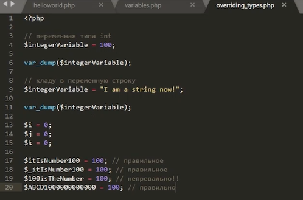
Открываем файл в браузере и видим, что произошла синтаксическая ошибка. Интерпретатор видит неизвестное сочетание символов 100, и ожидает название переменной или знак доллара или скобочки. Это определенность и синтаксические возможности языка php, которые могли бы быть, но не были использованы и предоставляет информацию о названий файла в котором произошла ошибка и строчку на которой произошла ошибка. Соответственно мы можем понять то, что на 19 строчке в нашем файлике есть синтаксически неверно написанная конструкция.
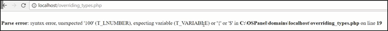
Если мы закомментируем 19 строку и обновить страницу, то все будет работать верно. И еще немного переименование переменных. Есть два популярных стиля как именовать переменные. Один из них я уже использовал в наших примерах. Он называется Lower Camel Case. Это означает, что первое значимое слово в названии переменной пишется с маленькой буквой, а каждое следующее значимое слово в названии переменной с большой. Например, переменная $iAmALongNameVariable, видим первая буква маленькая и каждая следующее слово начинается с большой буквы. Запомните, каждое новое значимое слово в названии переменной начинается с большой буквы.
Второй популярный тип именовали переменных это Snake Case. В данном типе каждое значимое слово разделяется символом подчеркивания в данном случае, та же переменная $iAmALongNameVariable будет определяться следующим образом $i_am_a_long_name_variable.
Вы для своего проекта можете выбрать любой из этих стилей наименование переменных. Но нужно понимать, что если к вам пришел в поддержку проект, который до этого писал другой программист и он именовал переменные стилем Snake Case, то не нужно в этом же проекте начинать именовать переменной Snake Case. Потому что правила хорошего тона программирования гласят, что стиль кодирования и написание кода должен быть одинаков во всем проекте.
В наших примерах мы использовали и будем использовать Lower Camel Case, потому что он наиболее популярен и удобен для чтения.
В данном разделе мы узнали, что такое переменная, и какие бывают типы данных, также научились правильно именовать переменные.
1.3. Массивы в PHP
Добро пожаловать на третий урок первого модуля «Введение в программирование». На этом уроке мы с вами поговорим что такое массив. Почему массив относится к смешанным типам данным. Как правильно инициализировать массив. Что такое ключ и значение массива. И так, что такое массив. Если переменная это некоторая коробочка, в которой может находиться какое то значение и у коробочки есть имя, то массив это коробочка с коробочками внутри, то есть в массиве может находиться несколько типов данных у каждой коробочки внутри коробочки которую мы называем массивом. Есть свое название это название называется ключом массива, а значение находящиеся в коробочке называется значением элемента массива. Давайте приведем несколько примеров. Открываем папку localhost и создаем в ней arrays.php.
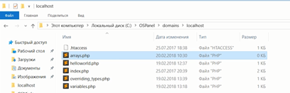
Открываем файл в Sublimetext. И открывая область php создадим нашу первую переменную типа массив. Массивы в php определяются следующим образом. Назовем переменную myArray и создадим пустой массив. Две квадратные скобки.
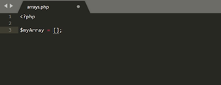
Что мы сейчас сделали? Мы создали массив коробочку в которой нет элементов, нет других коробочек. Сразу поясним, что это пустой массив.
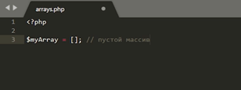
Есть еще один способ создать пустой массив. Назовем переменную anotherEmptyArray и определим ее вот таким вот способом.
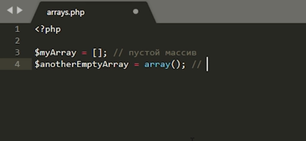
Первый способ определения массивов работает только начиная с версии PHP.5.4. А вот второй способ работает в любой версии.
И тут поясним то что это работает только на PHP 5.4 и выше.
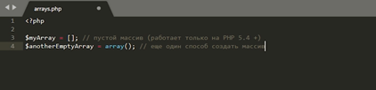
Давайте попробуем вывести на экран наши массивы. Для этого воспользуемся уже знакомой нам функцией var_dump.
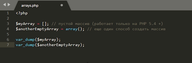
Открываем браузер и пишем localhost/arrays.php. Видим что у нас две переменные, типа массив, это первый в массиве ноль элементов. И в значении массива их нет.
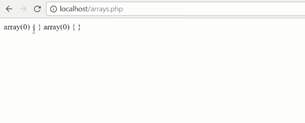
Давайте попробуем инициализировать массив какими то значениями. Создадим массив из чисел numbersArray, чтобы иницилизировать массив уже какими то числами можно их просто перечислить через запятую например 1, 2, 3, 4. Поясним что мы инициализировали массив числами
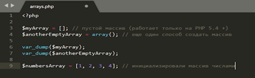
Но поскольку массив это смешанный тип данных, то есть в этой коробочке может находиться несколько разных типов, то не обязательно чтобы все элементы массива были числами. Например создадим переменную mixedTypeArray. И пусть первый элемент массива будет числом. Второй элемент массива будет строкой, а третий элемент массива будет число с плавающий точкой. Поясним что массив смешанный тип данных.
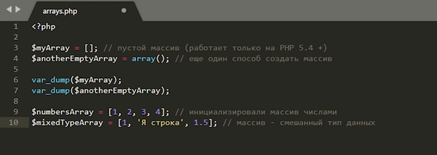
И выведем их на экран.
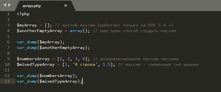
Проверим. Обновляем страницу. Видим результат.
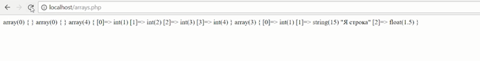
Но этот результат очень неудобно читать поскольку html по умолчанию игнорирует символы переноса строки, которые так усердно пытается вывести функция var_dump то мы воспользуемся некоторой хитростью. Это хитрость это тэг pre.
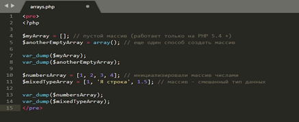
Этот тэг позволяет выводить текст браузер в браузер так как он есть. И мы видим то, что последние тег pre как то не так окрашен.
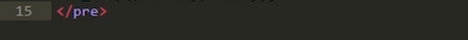
Все дело в том что мы забыли закрыть область php кода.
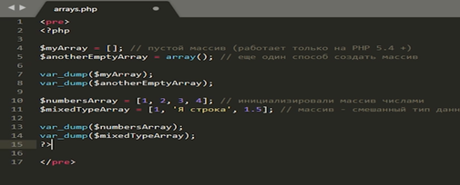
Потому-что интерпретатору php не нужно интерпретировать тэг pre.
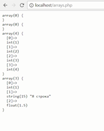
Видим, что массивы велись в удобном для чтения виде.
Проверим два пустых массива. Это из первого примера.
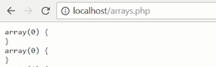
И два массива не пустых в первом 4 элемента. Видим что значение массива целое число 1 целое число 2 число 3 и целое число 4. И во втором массиве целое число 1 строка - я строка. И число с плавающей точкой
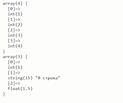
У вас может возникнуть вопрос, что за числа в квадратных скобках. Это как раз таки ключи массива название коробочка внутри коробочки по умолчанию название этих коробочке присваивается php автоматически начиная с нуля и так по очереди каждому элементу массива присваивается число на один больше предыдущего. Тут может у вас возникнет вопрос, а можно ли назначить ключи массива самому. Да, можно. Делается это следующим способом. Назовем перемену customKeysArray и назначим ей ключи произвольные. Делается это следующим образом пишем название ключа, который мы хотим увидеть.
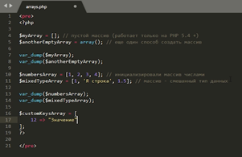
Добавим еще несколько элементов с произвольными ключами. И проверим Это выводом на экран. Var_dump(customKeysArray).
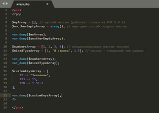
Обновляем страницу. Видим, что у нас появился массив из трех элементов. Ключ 12 значение строка. Ключ 133 значение целого числа 15. Ключ 128 значение числа с плавающий точкой.
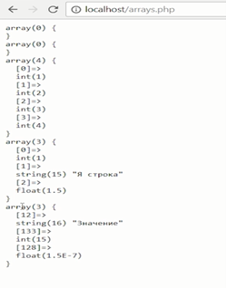
Еще одной важной особенностью php является то что ключом массива может быть не только число но и строка это очень важная особенность при разработке веб сайтов поскольку очень неудобно и непонятно что хранится в массиве с ключом 0 или 15. А вот если ключ массива будет Users или Prayses то понятно что в массиве хранится пользователи и цены. Давайте приведем пример stringKeysArray массив в котором ключи это строки. Допустим id 138 условно. name -Юрий и age 22 выведем на экран.
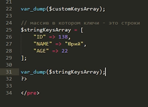
Обновляем страницу и видим то что у нас массив из трех элементов ключ строка 1 значения - 138, ключ строка name - значение Юрий
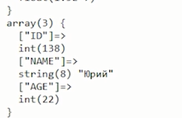
Типы ключей можно смешивать тобишь mixedTypeKeysArray. Ключом массива могут быть одновременно как числа, так и строки. Например «я значение с ключом типа число» еще один элемент массива. Пусть это будет some_key «я значение с ключом типа строка».
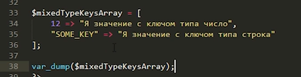
Сохраним и проверим. Не забудем оставить об этом комментарии «ключами массива могут быть одновременно и числа и строки». Заходим в браузер объявляем страницу и видим то что ключ 12 значение – строка, ключ some_key значение - тоже строка.
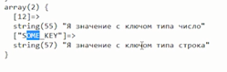
А теперь вопрос можно ли достать из массива какое то конкретное значение? Да, можно, для этого как раз таки существует ключи. Давайте приведем пример, удалим лишние данные и оставим, допустим вот этот массив со смешанными ключами.
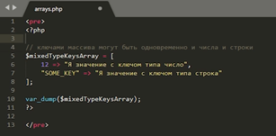
Как же достать элементы из массива. Делать это следующим образом назовем переменную arrayElement, пишем название перемены типа массив и в квадратных скобках ключ 12, в данном случае. И давайте сразу выберем второй элемент anotherArrayElement. Если ключ массива это строка. То в квадратных скобочках мы должны написать эту строку. Поясним что мы дoстаем элемент из массива. Выведем на экран сам массив выведем на экран первый элемент и второй элемент.
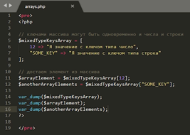
Проверим. Обновляем страницу видим наш массив.
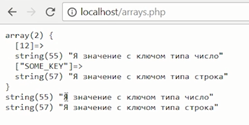
Первое значение «я значение с ключом типа число» и второе значение «я значение с ключом типа строка» - все работает. Значение элементов массива можно также переопределить, делается это следующим образом. Вот мы достали один из элементов массива arrayElement. Давайте попробуем его сначала вывести затем переопределить и вывести еще раз «mixedTypeKeysArray». Обращаемся к элементам массива по ключу. В нашем случае это 12. И присваиваем какое то другое значение. Например число 100. И выведем этот элемент на экран. Только в этот раз мы не будем записывать его в отдельную переменную.
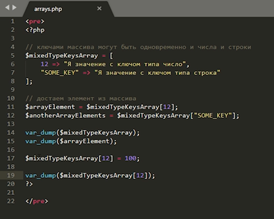
Проверим.
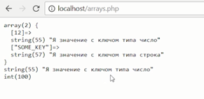
Видим что в первом случае значение элемента массива «я значение с ключом типа число» и затем его переопределили и вывели на экран и там число 100. Раз уже значение элемента массивов могут быть любыми типами. Может ли этот тип быть массивом. Да может это очень распространенная практика. Приведем конкретный пример, который может случиться в реальной жизни. Допустим на основе выборки из базы данных мы получаем массив Users. В этом массиве будут храниться пользовательские ключи у нее будут 0 1 2 3 4. Просто перечисление, назначениями будут массивы. Как это сделать. Просто определяем массивы один за другим, как мы делали это с числами или строками. Теперь заполним эти массивы. Пусть здесь у нас будет ключ name. Имя будет Юрий. ключ age -Возраст 22 ,и ключ phone значение будет строка + 79991234567. Следующий пользователь name Bасилий, age 32 ,phone + 78881233223. Ну какой то любой номер. И также поделим третьего пользователя. Пусть он будет с именем Hикита, возраст 55, и с каким то другим телефоном.
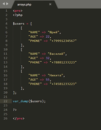
Выведем этот массив на экран и посмотрим что же у нас получится.
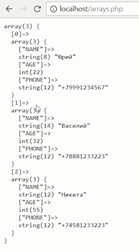
Видимо то, что ключи у нас присвоили автоматически - 0 1 2. Но значение элемента массива это и есть массив. То есть видим, что у нас массив из трех элементов и в каждом элементе массива хранятся еще три элемента. Таким образом, мы можем вывести на html страничку, нужную информацию. Давайте попробуем достать какой-нибудь из элементов многомерного массива. Допустим нам нужно достать пользователя firstuser. Делаем мы это как обычно users и указываем ключ «Достали один из элементов». Теперь так как мы знаем что first user у нас и так массив, мы можем достать из него имя. Так и напишем first users и обратимся к ключу name «Достали имя», можно ли избежать лишнего определения переменной. Конечно можно. Для этого существует следующая конструкция. Мы просто выведем на экран имя пользователя который мы достали в первый раз и обратимся напрямую к этому имени users ,обратились к массиву и далее в следующих квадратных скобках мы обращаемся сразу же к ключу уже Полученного массива. Поясню, что мы обращаемся к вложенному массиву.
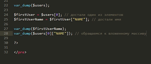
И проверим.
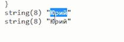
Обновляет страничку, видим то что в обоих случаях у нас появилось одно и то же имя. То есть вот эти способы идентичны. Давайте попробуем добавить элемент в этот массив. Чтобы добавить элемент массив используется следующая конструкция. Users и пустые квадратные скобки. И дальше пишем значение которое мы хотим добавить массив. Если указаны пустые скобки то ключ элемента массива приводится автоматически. В данном случае это будет три, поскольку ключи массива начинаются с нуля. Если же нам нужно добавить в массив элемент с произвольно ключом мы в квадратных скобках так и напишем «какой-нибудь произвольный ключ» допустим это будет строка custom_key. И дальше после знака равно значения который мы хотим добавить в массив. В нашем же случае нас интересует то чтобы ключ был сгенерирован автоматически. Поэтому оставим скобки пустыми. И значение которые нам нужно добавить в массив это «массив». И заполним его таким же образом name- Илья, age - 13 и телефон у него будет. + 7 2 3 1 2 3 2 2 3 3. Проверим Значение элемента массива После добавления нового элемента.
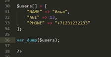
Обновляем.
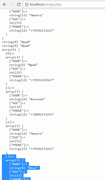
И видим то, что в первом случае у нас был массив из трех элементов. Есть только Юрий, Василий и Никита. А после добавления у нас появился еще один элемент Илья. Ключ ему присвоился автоматически. И значение, которое мы указали. Вот так можно просто добавить новый элемент. Есть еще один смешанный тип данных это объекты. Объекты используются в объектно-ориентированном программировании и по сути своей объект может содержать в себе любую сущность доступную в php. это могут быть как функции, которые в контексте объектов называются методами, Константы переменной любых типов. В конце каждого модуля Мы предлагаем домашние задания и домашние задания к этому модуля. Следующее: во первых вам будет необходимо установить и настроить Open Server Panel с самыми актуальными и последними версиями основных модулей php, mysql .
1.4 Структура файлов на сервере и их соответствие url в строке браузера
В этом разделе рассмотрим про некоторые небольшие, но очень важные нюансы, знание которых поможет вам в ваших первых шагах веб разработки. Также узнаем про то, как ссылки, которые вы набираете в строке браузера на вашем сайте соотносятся с файлами на вашем веб-сервере, то есть на том сервере на котором расположен ваш сайт. А также будет показано, как правильно указывать ссылки на вашем сайте, вне зависимости от того, что это за ссылки, ссылки на стили, на изображение или ссылка куда отправляются ваши запросы.
Первое давайте взглянем на слайд и посмотрим на структуру ее рассылки.
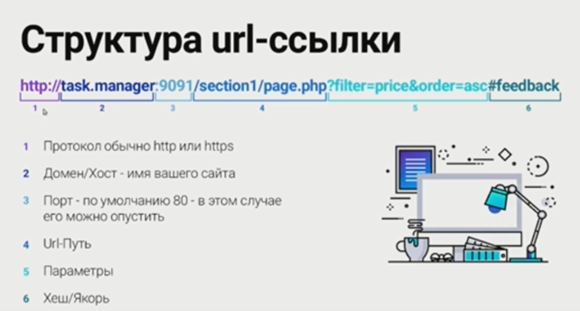
Ссылка состоит из 6 частей. Первая часть это протокол это HTTP либо HTTPS, могут быть использованы и другие протоколы но в основном эти два. Вообще протоколов очень большое количество не стоит на них заострять наше внимание. А второй это домен хост то есть имя вашего сайтаю.Это все хост имя вашего сайта. А следующий параметр 3 это порт по умолчанию 80 и в этом случае вы его можете опустить обычно когда вы заходите вы никогда через очень не указываете порт вашего сайта этот параметр чаще всего равен 80. По умолчанию он опущен, но вы всегда можете его указать и переопределить. Четвертый параметр это URL - путь это собственно та часть URL адреса. Следующий пятый параметр это дополнительные GET параметры . При переходе на указанный адрес вы можете передавать дополнительные данные с помощью GET параметров. И последний параметр это хэш или якорь. Это специальный параметр с помощью которого вы можете быстренько прокрутить при переходе на эту страничку к нужному элементу на странице. Поэтому называется якорь. То есть можно не просто перейти на указанную страницу а сразу прокрутить браузер до необходимого вам место. Ссылки на сайте могут как содержать все параметры так и содержать только часть из них, иногда только до 4 параметра.
Ссылки на сайте бывают двух видов абсолютные и относительные. Абсолютные ссылки это те ссылки у которых указано и домен на имя и протоколы домена. А все остальные ссылки являются относительным то есть если ваш институт есть HTTP и домен на имя это абсолютная ссылка. Любая другая ссылка является относительной. Когда необходимо использовать один вид ссылок, а когда другой? Правила довольно простое, если вам нужно сделать переход на другой сайт используете абсолютную ссылку, во всех остальных случаях абсолютные ссылки не используете, используете только относительные. Если вы будете пытаться использовать абсолютные ссылки на вашем сайте, то вы свой код очень легко можете привязать как протокол так имя домена так и порт. То есть если попробовать потом переехать на другое имя сайта, то ваш сайт не будет работать поскольку внутри адреса вы указали старое исходное имя. А пытаться сделать их динамическими это тоже не так то просто и к тому же зачем это делать если браузер сделает это все за вас.
Поэтому используйте только относительные ссылки при этом относительные ссылки тоже бывают двух видов.
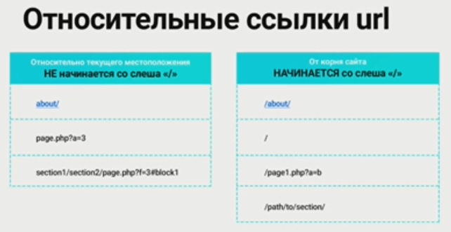
Если они начинаются со слэша (/) и если они со слэша не начинаются. Если ссылка начинается со слэша, то отсчет этой ссылки будет начинаться с корня вашего сайта где бы вы ни находились. Такие ссылки еще можно назвать полными. Если ссылка со слэша не начинается, то отсчет этой ссылки будет происходить относительно того места где вы сейчас находитесь. Какие ссылки нужно использовать на сайте? Всегда старайтесь использовать с полной ссылки то есть те которые начинаются именно со слэша кроме тех случаев когда вы абсолютно уверены в том что вы делаете. Такой подход в формировании полного адреса используется не только в url, но и например в файла системе Linux. Если вы поставите начальный слэш то отсчет пути будет происходить от корня файла системы. Так же как и здесь подсчет путей будет происходить от корня вашего сайта. Если вы начальный слэш не поставите, то путь будет отчитываться от вашего текущего местоположения.
Теперь давайте рассмотрим примеры. Предположим что мы находимся на сайте HTTP://task_manager в корне этого сайта. Последовательно будем разбирать ссылки расположенные в первой графе.
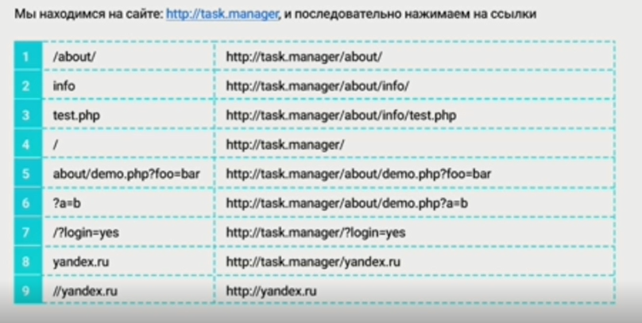
Первая ссылка /about/ приведет на страницу HTTP://task_manager/about/, поскольку это ссылка от корня сайта, то от корня сайта то есть от нашего доменного имени. Давайте теперь посмотрим куда придет следующая ссылка. Следующая ссылка относительная в начале нее слэш не стоит это значит что эта ссылка будет отсчитывать себя от текущего местоположения, то есть к нашему адресу в конец добавится раздел типа. Третья ссылка test.php данная ссылка также является относительной и она не отчитывается от корня сайта значит мы перейдем на страничку test.php относительно нашего текущего местоположения то есть к разделу info будет добавлен этот test.php. Следующая ссылка слэш, ссылка слэш это относительная ссылка начинается со слэша значит она будет отчитываться от корня сайта поскольку больше ничего не написано значит эта ссылка ведет нас в корень нашего сайта вне зависимости от того где бы мы сейчас ни находились. Следующая ссылка под номером 5 с GET параметрами, эта ссылка является опять же относительной. Вначале не стоит слэш, значит это ссылка будет идти от нашего текущего местоположения. В данном случае нет разницы стоит слэш вначале или не стоит поскольку мы находимся в корне сайта. Таким образом, наш полный адрес будет ссылка указанная в таблице. Следующая ссылка начинается со знаком вопроса ?а=b это тоже относительная ссылка хотя с первого взгляда может показаться что на ссылку совсем не похожа. Ссылка может состоять только из отдельных частей в данном случае представлена только часть содержащая GET параметры, а это относительно ссылка вначале нет слэша, а значит она будет отчитываться от нашего текущего местоположения. Наше текущее местоположение это файл demo в разделе about все что сделать это ссылка поскольку она начинается со знаком вопроса то она пересотрет все наши GET параметры а те которые указаны в этой ссылки. Седьмая ссылка это относительная ссылка, она начинается со слэша значит, она будет вести в корень нашего сайта а ссылки передаются GET параметр. Мы перейдем в корень нашего сайта с указанным GET параметром. Следующая ссылка yandex.ru. Хотя на первый взгляд может показаться что это ссылка на сайт яндекса, но это не так. В ссылки нет начинающего протокола и нет слэша значит это простая относительная ссылка и она приведет нас во внутренний раздел yandex.ru от нашего текущего положения. Последняя ссылка //yandex.ru. Данная ссылка как раз является абсолютной. Она будет вести нас на другой сайт на yandex.ru. А если мы не указываем протокол то мы переходим на тот же самый протокол на котором мы находимся сейчас, то есть он условно таким останется. Таким образом, мы можем избавиться от зависимости необходимости указывать протокол.
А теперь давайте собственно и рассмотрим соответствие URL которое выбивать в адресной строке и как этот URL сопоставлять с файлами папки на вашем сервере. А первое что вы указываете это доменное имя, он указывает на какой то конкретный веб сервер на котором нужно искать файлы и папки, которые будут дальше указывать его в адрес. А этот механизм называется DNS. Каждому доменному имени сопоставляется определенный IP адрес определенного компьютера на котором и располагается ваш сайт. Обычно поиск осуществляется через интернет но вы можете переопределить это поведение с помощью специального файла hosts. Наверняка вы о нем уже слышали, как раз таки Open-Server работает благодаря этому файлу. Те хосты которые вы создаете он прописывает в этот файл hosts и перенаправляет для просмотра на нашем локальном компьютере.